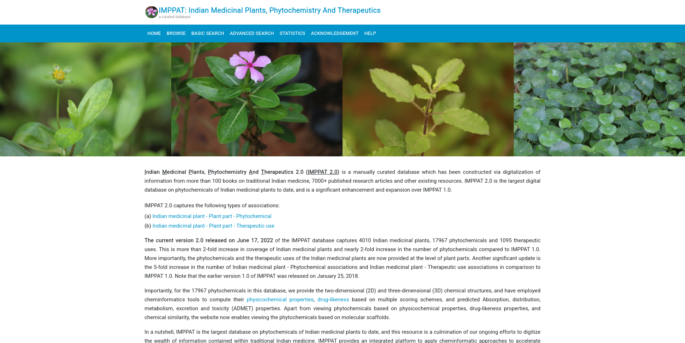
IMPPAT
Indian Medicinal Plants, Phytochemistry And Therapeutics
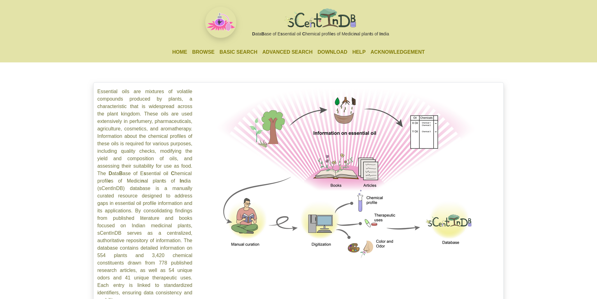
sCentInDB
DataBase of Essential oil Chemical profiles of Medicinal plants of India
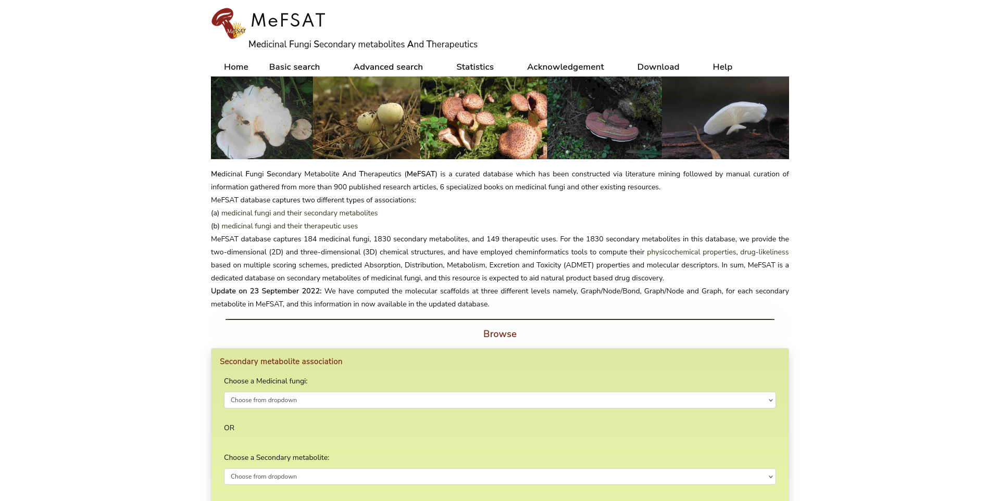
MeFSAT
Medicinal Fungi Secondary metabolites And Therapeutics
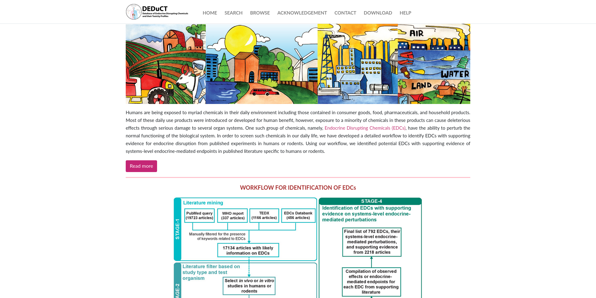
DEDuCT
Database of Endocrine Disrupting Chemicals and their Toxicity profiles
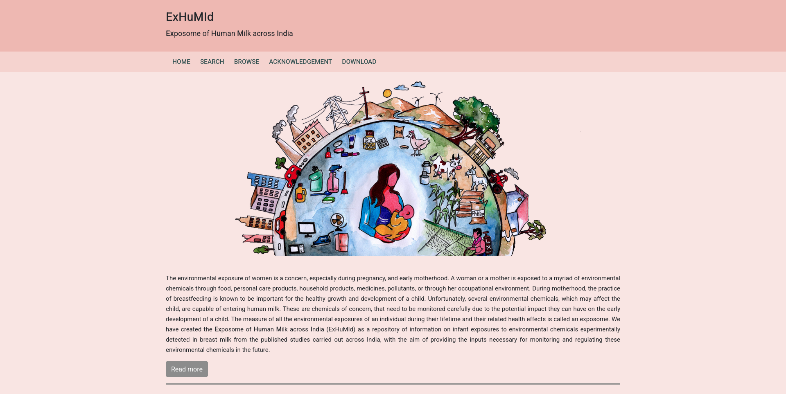
ExHuMId
Exposome of Human Milk across India
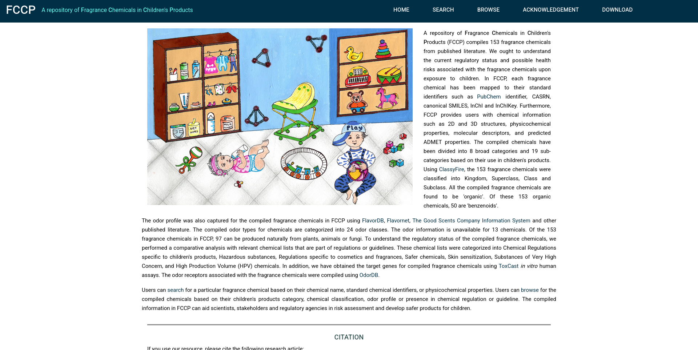
FCCP
A repository of Fragrance Chemicals in Children’s Products
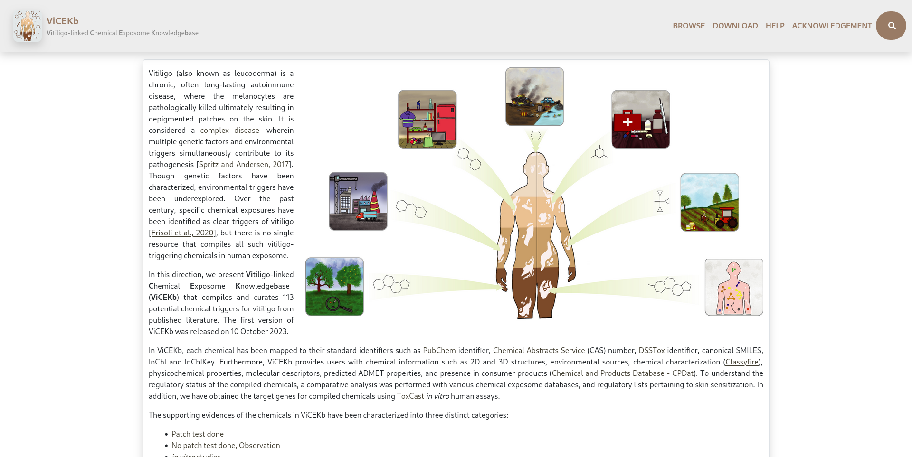
ViCEKb
Vitiligo-linked Chemical Exposome Knowledgebase
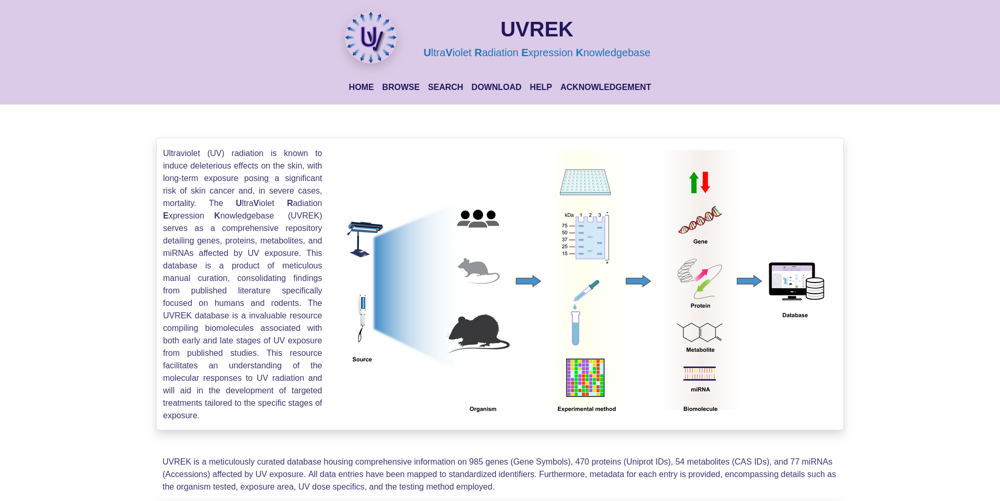
UVREK
UltraViolet Radiation Expression Knowledgebase
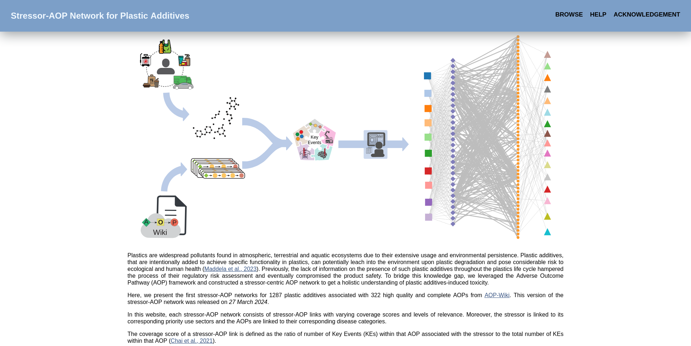
Stressor-AOP Network for Plastic Additives
Stressor-AOP Network for Plastic Additives
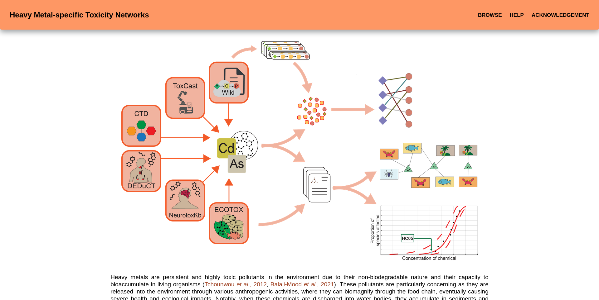
Heavy Metal-specific Toxicity Networks
Heavy Metal-specific Toxicity Networks
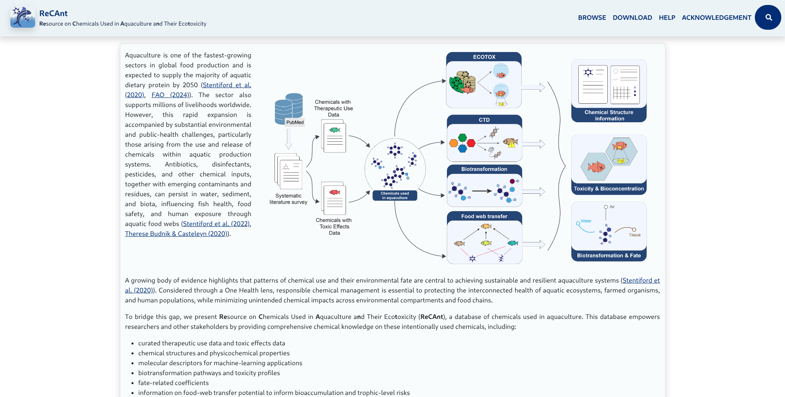
ReCAnt
Resource on Chemicals Used in Aquaculture and Their Ecotoxicity
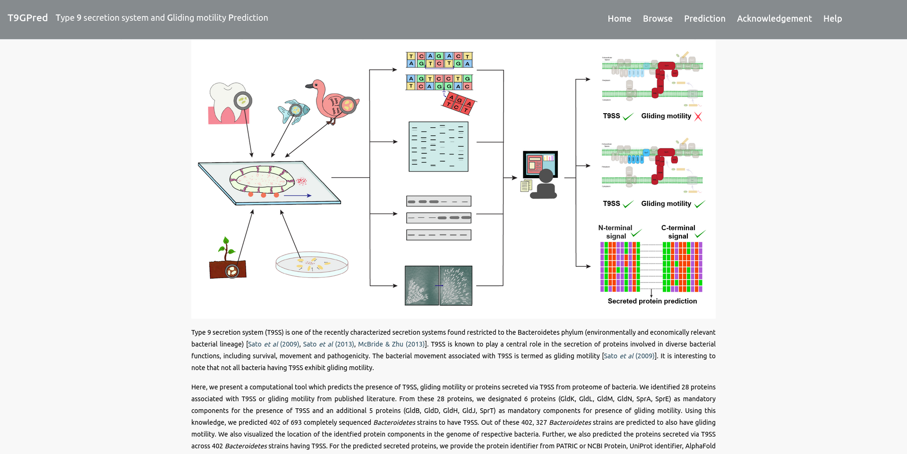
T9GPred
Type 9 secretion system and Gliding motility Prediction
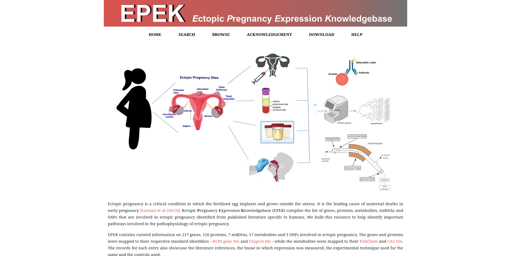
EPEK
Ectopic Pregnancy Expression Knowledgebase
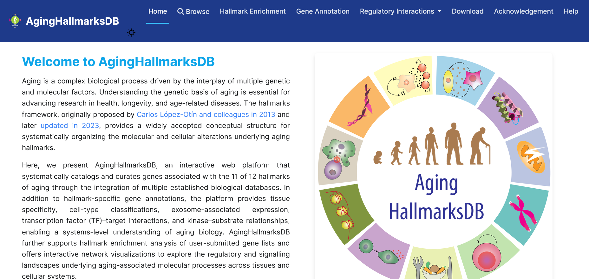
AgingHallmarksDB
A database resource on aging hallmarks
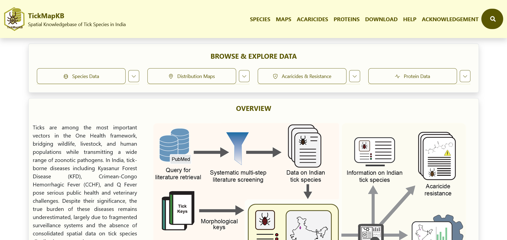
TickMapKB
Spatial Knowledgebase of Tick Species in India
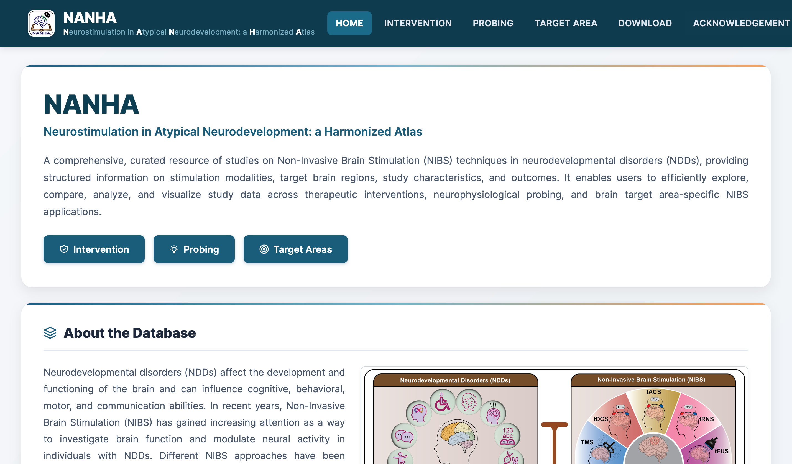
NANHA
Neurostimulation in Atypical Neurodevelopment: a Harmonized Atlas
Try another name, keyword, or research area.